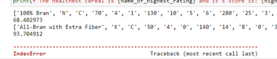

היי, אני מיום ראשון על התרגיל של הדגנים הבריאים
קצת מתוסכלת כי ברור לי שיש לי שם משהו לא בסדר, אבל מרוב שישבתי עליו אני לא מצליחה לחשוב אחרת כבר על התהליך חשיבה, וגם ברור לי שכבר הסתבכתי עם קוד ארוך ולא אלגנטי.
ניסיתי להתקדם הלאה אבל מרגישה שנוצר לי פער כלשהו ואני חייבת להתגבר על המכשול הזה, ומאוד מודאגת שלא אספיק להגיש את כל התרגילים של השבוע בזמן.
אשמח להכוונה כלשהי!
תודה רבה!

Felixmn
לגבי שגיאת האינדקס שאת מקבלת - נסי לחשוב מה הם אינדקסים תיקניים ומה הם לא?
יש באחת המחברות הקודמות הסבר על טעות נפוצה שעלולה לקרות במעבר על אינדקסים של רשימה.
liron.assor
כי בסוף יש לי רשימה ריקה שאין לי מושג איך יצרתי אותה או איך אני מבטלת אותה… גם כשניסיתי לשחק אותה ראש קטן ולחתוך את הרשימה הגדולה זה לא ביטל אותה משום מה …
liron.assor
למשל עכשיו שיחקתי עם המספרים … והפונקציה עובדת! לא ברור לי אבל מה עשיתי שגרם לה לעבוד בכלל
Felixmn
יש בחוברת הסבר לשגיאה נפוצה לשגיאה נפוצה שנקראת משהו בסגנון “הזזה ב-1” (המחברת לא מולי כרגע, אז לא זוכר את השם המדויק).
משמעות שגיאת אינדקס שאת מקבלת אומרת שאת מנסה לגשת למקום ברשימה שלא ממש קיים…
אני חושב שזה יעזור לך לראות איפה הבעיה מבחינה מהותית במקום רק לשחק עם מספרים
yuval
היי, יש לי נראה לי את אותה בעייה בדיוק (עם האינדקס)
אני לא מצליחה לתקן את זה ומרגי שלי שניסיתי הכל, כבר מתוסכלת
את אולי יודעת להגיד מה עשית כדי לתקן את זה?
liron.assor
אם הטעות שלך היא כמו שלי (בלולאה) ממליצה להגייע לסרטון תרגול על הלולאות. התנאי שלי היה לא הגיוני ושיניתי אותו